One organisation, two disciplines. Our civil engineering and IT divisions work as one team on every project.
Team Members
Divisions
Certifications
Avg. Experience
The people accountable for both divisions.
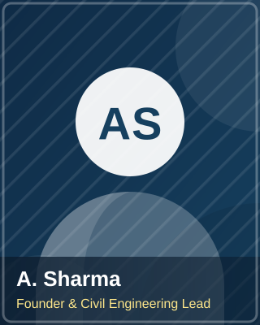
Sets the technical direction for every build and signs off on structural design.
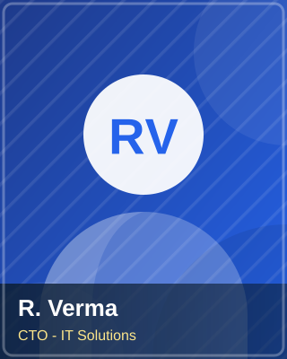
Leads the software division, from architecture reviews to cloud delivery.
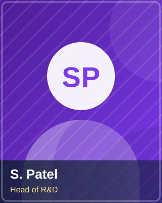
Drives the Smart Cities and IoT research programmes.
Filter by division to see who works on what.
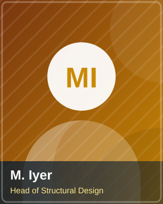
Leads load analysis, RCC detailing and seismic retrofits.
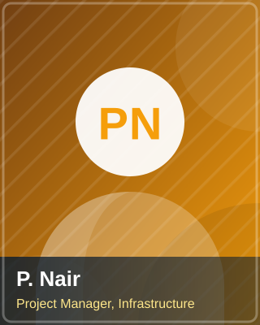
Runs timelines, budgets and contractor coordination on site.
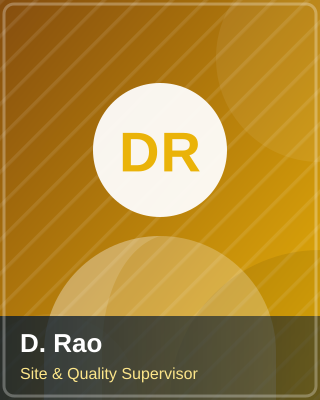
On-site quality assurance, material testing and safety compliance.
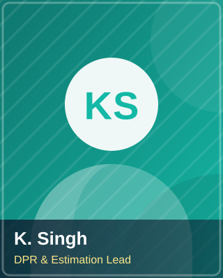
Prepares Detailed Project Reports, feasibility studies and estimates.
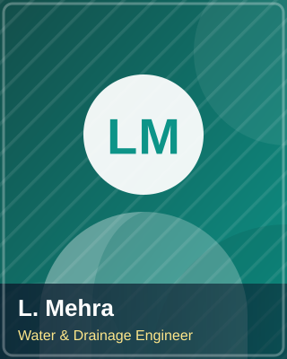
Designs stormwater networks, waterways and treatment systems.
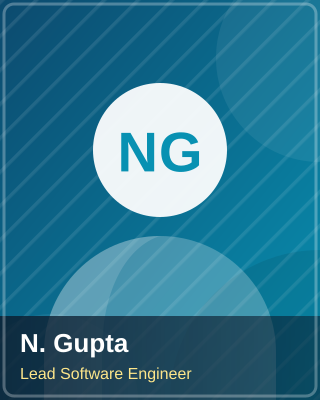
Builds web platforms, ERPs and mobile apps for clients.
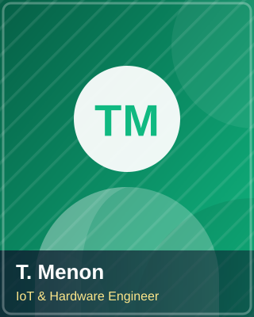
Sensor networks, device firmware and hardware-software pipelines.
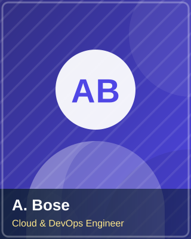
Handles migration, hosting, CI/CD and scalable cloud architecture.
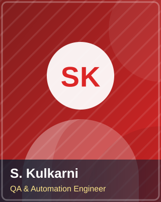
Test strategy, automation suites and release sign-off.
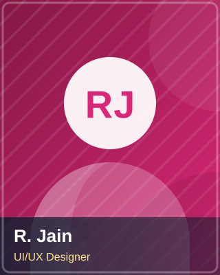
Designs accessible interfaces and client-facing product visuals.
Small blended teams that ship fast on larger engagements.
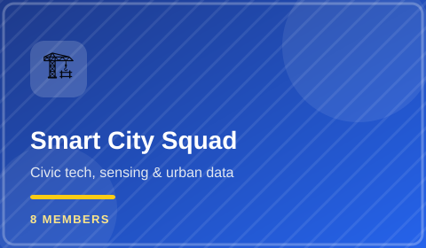
Civil planners, IoT engineers and data analysts designing civic technology.
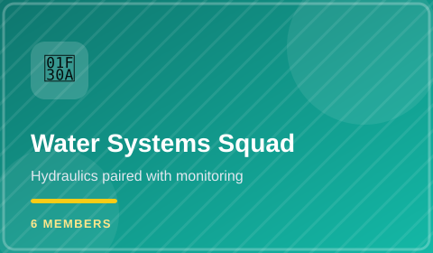
Hydraulic engineers paired with monitoring-software specialists.
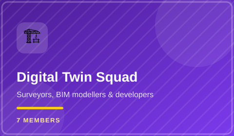
Surveyors, BIM modellers and developers building live site replicas.
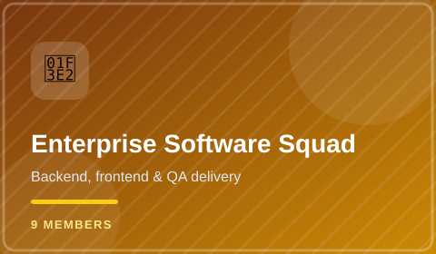
Backend, frontend and QA engineers delivering business platforms.
Tell us about your project and we'll assemble the right squad for it.